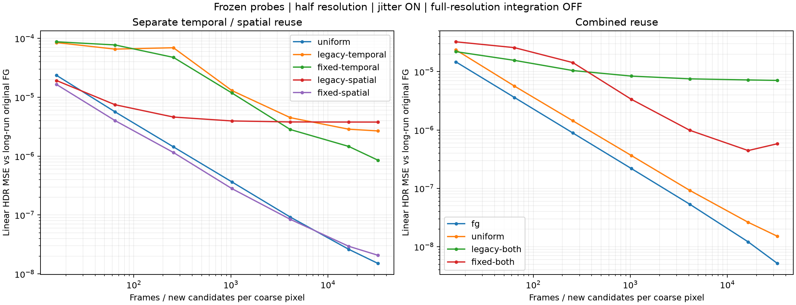
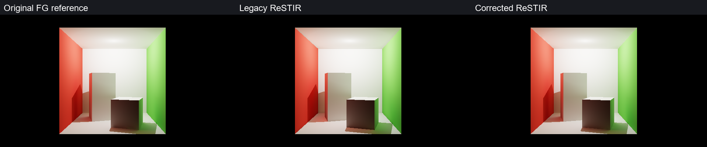

旧实现确实有复用归一化问题。单纯延长累积不能消除它。修正后空间复用的长时间误差显著降低；时间复用仍存在强相关与较大残差，不能据此宣称整个实现严格无偏。
640×360 Lambert Cornell，半分辨率追踪、jitter 开启、全分辨率积分关闭、原 16 tap 重建、Accumulate 开启、无 NRD。各组先运行 8192 帧 probe 更新，再冻结；reservoir 与累积从空历史开始。每个有效粗像素每帧一个新候选。空间 2 pass × 4 邻居，半径 8，时间 M 上限 20。旧、新路径使用相同起始随机序列。
这里用同一冻结 probe 下的原始 cosine FG 131072 帧作为参考，专门隔离复用误差；不是 PT，也不是上一份 1080p 实验。参考 65536→131072 帧的 MSE 为 1.69e-09。指标在非黑色场景像素上以线性 HDR RGB 计算。本次为单随机序列诊断，没有置信区间；原 FG 与自身长序列参考共享前缀，因此其误差稍有乐观。
| 路径 | MSE vs 原 FG 参考 | 平均 RGB / 参考 |
|---|---|---|
| fg | 5.15711e-09 | 1.000003 |
| uniform | 1.50586e-08 | 1.000088 |
| legacy-temporal | 2.68029e-06 | 1.000431 |
| legacy-spatial | 3.78763e-06 | 1.005009 |
| legacy-both | 7.07397e-06 | 0.996762 |
| fixed-temporal | 8.53025e-07 | 0.999127 |
| fixed-spatial | 2.06963e-08 | 1.000089 |
| fixed-both | 5.80959e-07 | 0.999251 |
uniform 为与 ReSTIR 相同的 uniform hemisphere 候选，但不做时空复用。它收敛到原 FG，说明初始采样与积分没有整体 π 因子错误。legacy/fixed 分别是旧实现与本次修正；包含归一化和单侧 Jacobian 两项修改，未单独量化两者贡献。

曲线横轴是空历史开始后的帧数，纵轴是误差，均为对数坐标。fixed-both 的尾部仍有波动；一条曲线不足以把剩余误差全部判断为偏差或全部判断为方差。

精确枚举测试：当前来源支持 {a,b}，邻居支持 {b,c}，积分值 4；旧的按样本拒绝方式期望为 4.5，支持域修正为 4。测试脚本为 tests/ddgi/test_restir_support_weights.py。
检查 D:/Unreal/UnrealEngine/Engine/Shaders/Private/Lumen/LumenReSTIRGather.usf：初始 uniform 采样与 Li 亮度 target 相似；时间复用处 Jacobian 固定为 1（约第 720 行），空间才计算几何 Jacobian（约第 566 行）；空间使用短距离屏幕可见性检查（约第 907 行），归一化为简单 M 分母（约第 926 行）。我们的世界命中点重连、硬件可见性与它并非同一个估计器。不能用“与 Lumen 结构相似”证明无偏。
来源支持域/可见性校正也可参照 NVIDIA RTXDI 的 GI 空间复用实现，其中会再次遍历来源，对最终选中样本计算来源 target 与可见性。此处按当前 Li target 独立实现了简化校正，并未移植其 shader。
关闭 jitter，其余流程相同；使用这组自己的原 FG 131072 帧参考，避免重建采样位置变化污染比较。
| 路径 | 4096 帧 MSE | 16384 帧 MSE | 32768 帧 MSE |
|---|---|---|---|
| uniform | 9.57758e-08 | 2.65524e-08 | 1.57007e-08 |
| legacy-temporal | 1.49587e-06 | 3.88765e-07 | 1.96275e-07 |
| fixed-temporal | 1.49588e-06 | 3.88777e-07 | 1.96291e-07 |
固定出发位置时，旧、新时间复用几乎一致；MSE 从 4096 帧的 1.50e-6 降到 32768 帧的 1.96e-7，接近 1/N，但仍约为 uniform 的 12.5 倍。这支持“时间样本相关会降低有效采样量”的解释。开启 jitter 后误差更高，说明跨位置重连还会放大问题；本次单序列不能完全分离其剩余偏差和相关方差。
新选项 restirBiasCorrection 默认开启，UI 名称 Source visibility correction；关闭可复现旧权重。ReSTIR 总开关仍默认关闭，全分辨率积分仍关闭。本次未测新增反向可见性射线的 GPU 开销。空间校正使用来源存储的主表面法线，Lambert 平面场景成立；一般法线贴图材质还需区分几何/着色法线。命中点缓存光照的方向相关性、DDGI view bias、极端 Jacobian 限制和长寿命历史样本仍需考虑，不能声称普适无偏。
复现：tests/ddgi/restir_weight_audit.py、restir_weight_audit_static_origin.py、score_restir_weight_audit.py；原始 EXR 和运行记录位于 build/restir-weight-audit*。旧报告保留，不覆盖历史数据。